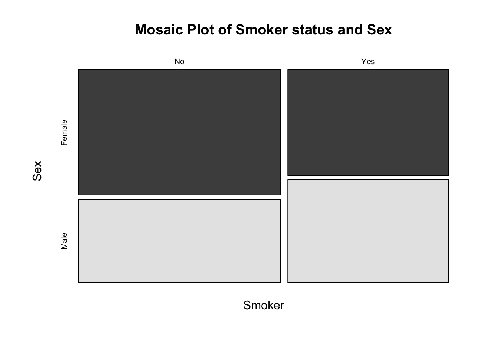

Exploratory Data Analysis of the Diabetes Health Indicators Dataset
Annie DiFrank
ST558 Final Project, December 5, 2024
Introduction
In this project, we will be exploring the Diabetes Health Indicators Dataset (available on Kaggle).
Diabetes is a serious chronic disease with multiple complications associated. There are many genetic, environmental, and lifestyle factors that can be associated with risk of diabetes. The risk of type II diabetes, the most common form, can differ by race, education, age, income, and many additional factors.
The data analyzed here was collected via a health-related telephone survey conducted by the CDC’s Behavioral Risk Factor Surveillance System (BRFSS). These features are either questions directly answered by participants or calculated variables based on participants’ responses. We are interested in finding the best model to predict the occurance of prediabetes or diabetes (a binary variable, Diabetes_binary). That is, we are interested in what risk factors are the most predictive of diabetes, and can we use this subset of variables to classify disease occurrence?
There are already well-known medical factors (mainly related to diet) that can increase risk of diabetes, so for this project I am going to focus on some factors that may have less-known associations; mental health, sex, age, education, income, and smoker status.
Especially because we did not personally create this data, the purpose of this exploratory analysis is to get to know the data and how it is stored. This includes overall distributions of variables, how variables are stored (numerically, as factor variables, etc- do the column types make sense for the variable) and any pre-existing relationships between variables that we should be aware of before attempting to fit the data to a predictive model.
With a well-fit model, we could potentially create a risk stratification panel for individuals that have not been diagnosed with prediabetes/diabetes.
In this file, we will perform exploratory data analysis before moving on to modeling with the data.
Rows: 253680 Columns: 22
── Column specification ────────────────────────────────────────────────────────
Delimiter: ","
dbl (22): Diabetes_binary, HighBP, HighChol, CholCheck, BMI, Smoker, Stroke,...
ℹ Use `spec()` to retrieve the full column specification for this data.
ℹ Specify the column types or set `show_col_types = FALSE` to quiet this message.
# all variables have been imported as numeric, going to adjust appropriately- diabetes <- diabetes %>%mutate(Diabetes_binary =factor(Diabetes_binary, levels =c(0, 1), labels =c("No", "Yes")),Smoker =factor(Smoker, levels =c(0, 1), labels =c("No", "Yes")),Sex =factor(Sex, levels =c(0, 1), labels =c("Female", "Male")),Age =factor(Age, levels =c(1,2,3,4,5,6,7,8,9,10,11,12,13), labels =c("18-24","25-29","30-34","35-39","40-44","45-49","50-54","55-59","60-64","65-69","70-74","75-79","80 or older")),Education =factor(Education, levels =c(1,2,3,4,5,6), labels =c("never attended school or only kindergarten","elementary","some high school","high school graduate","some college or technical school","college graduate")),Income =factor(Income, levels =c(1,2,3,4,5,6,7,8), labels =c("less than 10k","less than 15k", "less than 20k", "less than 25k","less than 35k","less than 50k","less than 75k","75 or more")) ) %>%select(c(Diabetes_binary, Smoker, Sex, Age, Education, Income, MentHlth))#Checking for missingness sum(is.na(diabetes))
`summarise()` has grouped output by 'Diabetes_binary'. You can override using
the `.groups` argument.
# A tibble: 26 × 3
# Groups: Diabetes_binary [2]
Diabetes_binary Age count
<fct> <fct> <int>
1 No 18-24 5622
2 No 25-29 7458
3 No 30-34 10809
4 No 35-39 13197
5 No 40-44 15106
6 No 45-49 18077
7 No 50-54 23226
8 No 55-59 26569
9 No 60-64 27511
10 No 65-69 25636
# ℹ 16 more rows
I expected diabetes occurance to have the positive trend with age. It visually looks like it goes down at 70+ years old, but I believe this is just due to the total N of these age groups being lower.
`summarise()` has grouped output by 'Diabetes_binary'. You can override using
the `.groups` argument.
# A tibble: 16 × 3
# Groups: Diabetes_binary [2]
Diabetes_binary Income count
<fct> <fct> <int>
1 No less than 10k 7428
2 No less than 15k 8697
3 No less than 20k 12426
4 No less than 25k 16081
5 No less than 35k 21379
6 No less than 50k 31179
7 No less than 75k 37954
8 No 75 or more 83190
9 Yes less than 10k 2383
10 Yes less than 15k 3086
11 Yes less than 20k 3568
12 Yes less than 25k 4054
13 Yes less than 35k 4504
14 Yes less than 50k 5291
15 Yes less than 75k 5265
16 Yes 75 or more 7195
One thing you could glean here is that there are over double the amount of people that make more than 75k versus less than 75k (and every other wealth status for that matter) but it doesn’t appear that diabetes occurance doubles- looks like income could potentially be a protective factor to a certain extent. This would make sense; better access to healthier foods, health care, etc.
`summarise()` has grouped output by 'Diabetes_binary'. You can override using
the `.groups` argument.
# A tibble: 12 × 3
# Groups: Diabetes_binary [2]
Diabetes_binary Education count
<fct> <fct> <int>
1 No never attended school or only kindergarten 127
2 No elementary 2860
3 No some high school 7182
4 No high school graduate 51684
5 No some college or technical school 59556
6 No college graduate 96925
7 Yes never attended school or only kindergarten 47
8 Yes elementary 1183
9 Yes some high school 2296
10 Yes high school graduate 11066
11 Yes some college or technical school 10354
12 Yes college graduate 10400
It looks like those with diabetes have experienced more poor mental health days than those without, which makes sense. It would be interesting to see that variable further split up- what caused that poor mental health (job? physical health? relationship stress?)
Next, lets look at any variable correlations. I’m just going to explore some relationships I think could be significant.
ggplot(data=diabetes) +geom_boxplot(aes(x=Income, y=MentHlth, fill = Income))
It looks like the median of poor mental health days decreases as income levels increase. Lower-income groups have a higher spread/variability than higher-income groups. In general, higher income appears to correlate with fewer days of poor mental health on average.
ggplot(data=diabetes) +geom_boxplot(aes(x=Education, y=MentHlth, fill = Education))
We see similar trends here; it appears that the median amount of poor days decreases as education levels increase.
mosaicplot(table(diabetes$Income, diabetes$Education), color =TRUE, main ="Mosaic Plot of Income and Education",xlab ="Income", ylab ="Education")
Education and income appear to have a positive correlation.
mosaicplot(table(diabetes$Smoker, diabetes$Sex), color =TRUE, main ="Mosaic Plot of Smoker status and Sex",xlab ="Smoker", ylab ="Sex")

In this population if you are a male you are more likely to be a smoker than if you are a female.
Here we see that for lower education levels (elementary, some highschool, highschool graduate, some college) there are more male smokers than female (relative to the total count in each group- there is a higher percentage of men that smoke that dont) but in the highest education level, for both sexes it is less common to be a smoker.
We see the same trends here- again highlighting the association between income and education it appears.
Conclusions
The biggest thing we have gathered from this analysis is that there is an association between two predictor variables, education and income. There are likely other positive associations that just make logical sense (like age and smoking, or age and education or income level). We also saw some potential associations between mental health and other predictor variables as well as with diabetes occurrence.
Next, lets model. Click here to go to the Modeling section!